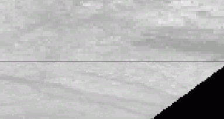

Description of MODIS products import process using MODIS Reprojection Tool
Objective: Convert MODIS level 2G, 3, 4 data in needed projection and GeoTIFF format with simultaneous mosaicing in case of multiple tiles.
Transformation without mosaicing
Originally, MODIS data products of levels 2G, 3, 4 are distributed in HDF format and specific sinusoidal projection (more on MODIS products (rus)).
To reach our objective, we can use (convesion and reprojection) we can use software called MRT (MODIS Reprojection Tool). Besides graphic user interface, this program can be operated via command line. To process MODIS data level 1, different software should be used - MRT Swath. Using command line data processing can be easily automated to work with multiple tiles.
Command line to run transformation process will look like this.
where:
-p paramfile.prm - name of the parameters file, which contains all necessary information for transformation process, this is a required parameter (see below)
-i inputfile.hdf - input file name in hdf format (e.g. MOD09Q1.A2003001.h18v02.004.2003352020715.hdf)
-o outputfile.tif - output files name with tif extension
Addtitional parameters can be set via command line, by adding new parameters, or by entering them in parameters file, in our case paramfile.prm. This file is a regular text file, which looks like this:
For Albers Equal Area projection of the output:
For geographic projections :
where:
INPUT_FILENAME - input hdf filename.
SPECTRAL_SUBSET - band to be imported. E.g., for MOD09Q1 product (reflectance, 250 м resolution) total number of bands is 3, to import first two and skip 3 this parameter should look like this SPECTRAL_SUBSET = (1 1 0).
OUTPUT_FILENAME - output tif filename.
RESAMPLING_TYPE - interpolation type (nearest neighbor, bilinear, cubic convolution).
OUTPUT_PROJECTION_TYPE - projection type of the output file, in our case AEA - Albers Equal Area, GEO is used often too.
OUTPUT_PROJECTION_PARAMETERS - list of output projection parameters, if output projection is GEO (OUTPUT_PROJECTION_TYPE = GEO), then all parameters are zeroes.
DATUM - datum, usually WGS84 (NAD83), other datums like Pulkovo 1942 are not supported.
OUTPUT_PIXEL_SIZE - output file resolution, if this parameter is omitted, then output resolution is calculated by MRT itself.
Transformation with mosaicing
Если территория исследования захватывает несколько фрагментов, то перед перепроектированием рекомендуется их объединить в мозаику, но не наоборот. Это следует делать исходя из следующих соображений:
1. MRT не может сшивать в мозаику файлы в формате TIF
2. Если сначала сделать resample каждому фрагменту, а потом сшить их в мозаику в другом ПО, то есть большая вероятность получить "щели" шириной в 1 пиксел на стыках фрагментов.

Для получения более корректной мозаики, можно воспользоваться второй программой, входящей в пакет MRT - mrtmosaic.
где:
-i files.prm - имя файла содержащего перечень (полный путь и название файла) фрагментов для создания мозаики
-s "1 0 0" - конвертируемые каналы. Например для продукта MOD09Q1 (отражающая способность 250 м разрешения) общее количество каналов 3, соответственно, чтобы импортировать первый, второй, но не импортировать третий SPECTRAL_SUBSET = (1 1 0)
-o outputfile.tif - имя выходного файла в формате TIFF.
Таким образом, обычно, командный файл (bat-файл) имеет вид:
То есть сначала фрагменты мозаицируются, а затем трансформируются в необходимую проекцию и формат TIF.
Кроме командной строки MRT также имеет графический интерфейс.
Дополнительные настройки командной строки и дополнительные настройки файла параметров смотрите в документации к MRT.
Для большого количества файлов удобно воспользоваться утилитой генератором пакетных файлов MODIS-Import-tool, которая выполнит работу по созданию файлов параметров и т.д. автоматически.